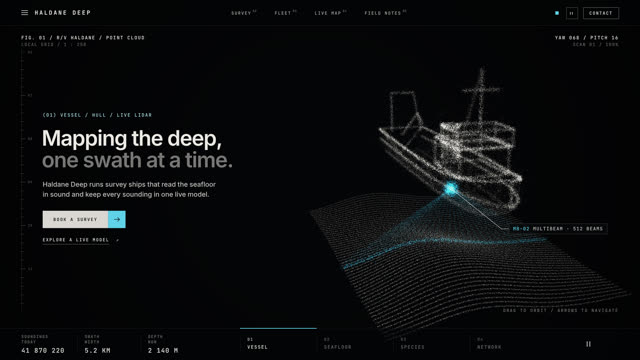
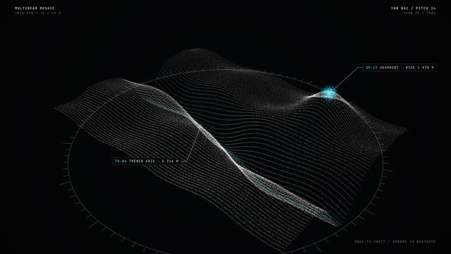
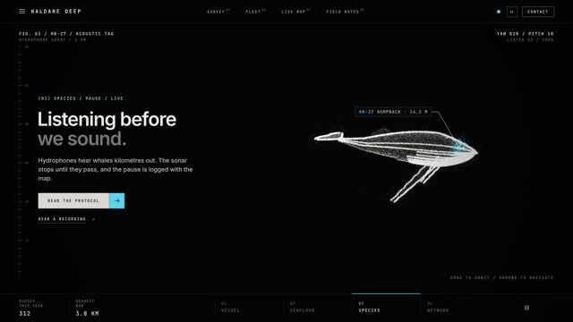
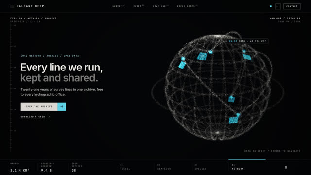
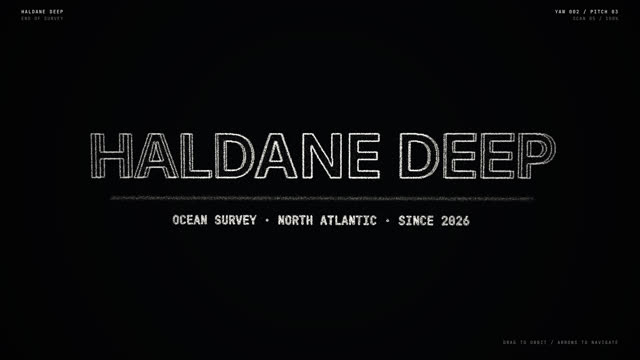

작업 흐름
- 입력
- 주제 하나(해저 지도를 만드는 회사, 바이올린 공방, 도시의 지하철 …). 레퍼런스 영상이 있으면 그 스틸
- 브리프
- 형태 3–6개의 순서와 그 순서가 말하는 이야기, 형태마다 재료(선 · 면 · 키트 · 메시) · 등장 방식(성운 · 흐름 · 폭발 · 접힘 · 스캔)과 방향 · 카메라 · 사이트 화면 여부 · 문구 · 강조색 하나를 적은
BRIEF.md - 형태
- 빌더로 설계한 형태를 정해진 점 개수로 샘플링, 공간 채움 곡선 순서로 정렬해 왼쪽은 왼쪽으로 흐르는 모핑. 태그 붙인 부분은 회전 · 흔들림 · 출렁임
- 확인
- 형태마다 앞 · 오른쪽 · 뒤 · 왼쪽 시트, 샷마다 모핑 중간 · 정착 · 끝 시트, 프레임 안 · 문구와 겹침 · 콜아웃 겹침 · 컷에서 튐 · 하얗게 날아감 · 결정성 검사
- 출력
- 30fps 1920×1080 MP4(드론 · 노이즈 휙 · 스캔 틱 · 정착 차임 합성 사운드), 반복 재생 · 드래그 회전 · ← → 형태 이동 라이브 페이지,
?scroll=1스크롤 연동 섹션
cd point-cloud-morph/examples/deep-survey
node ../../scripts/check.mjs index.html
node ../../scripts/render.mjs index.html --forms --scale .5
node ../../scripts/render.mjs index.html --sheet --scale .5
node ../../scripts/score.mjs index.html --out out/film.wav
node ../../scripts/render.mjs index.html --audio out/film.wav
node ../../scripts/new-film.mjs ~/my-film요구 사항: Node + Playwright Chromium, ffmpeg. GPU · npm 설치 · API 키가 필요 없습니다(CPU WebGL에서 점 16만 개 1080p 한 프레임 약 0.18초, 27.9초 예제를 워커 4개로 약 2분 30초). 단계별 순서는 SKILL.md에 있습니다.
샘플
원본 영상에 없는 주제로 브리프부터 새로 설계해 만든 예제의 장면, 형태 검토 시트, 시작 템플릿입니다. 카드를 누르면 그 순간이 라이브 페이지에서 멈춘 채 열리고, 드래그로 돌려 볼 수 있습니다.
「Haldane Deep」 27.9초 · 형태 5개
해저 지도를 만드는 회사: 조사선이 스캔되고, 그 음파가 본 해저가 해구 전체가 되고, 조사를 멈추게 하는 혹등고래가 되고, 지금까지 달린 모든 측선의 지구가 되고, 이름이 됩니다

형태 1 · 조사선선체와 음파 부채꼴선체 곡면 두 장, 갑판 · 흘수선 · 늑골 선, 송수파기 핫스팟, 배는 천천히 롤링

형태 2 · 해저해구와 해산소나 줄처럼 그린 지형, 강조색 해구 축, 3D 링, 콜아웃 두 개 · 몰입 화면

형태 3 · 혹등고래꼬리가 움직이는 고래몸통 곡면, 배 주름 선, 긴 가슴지느러미, 두 마디 꼬리의 흔들림 · 지느러미 흔들림

형태 4 · 지구모든 측선지구 와이어, 해역별 측선, 대원 항로, 항구 핫스팟, 점선 경로

형태 5 · 이름워드마크두께 있는 글자 형태, 안으로 접혔다가 다시 펼쳐지며 등장
모핑 중간 스캔 · 성운 · 폭발
형태가 다음 형태가 되는 사이의 순간입니다. 등장 방식마다 흩어지는 모양과 방향이 다릅니다
형태 검토와 시작 템플릿 네 방향 시트 · 14초
샷을 쓰기 전에 형태를 네 방향에서 보고, 새 영상은 템플릿에서 시작해 주제에 맞는 형태로 바꿉니다
실제 작품
이 스킬을 만든 출처와, 이 레포에서 새 주제로 만든 예제입니다.
링크
- SKILL.md 워크플로
- 폴더 lib · scripts · templates · examples
- README.md 빠른 시작
- references/BRIEF.md 주제 → 브리프, 형태 · 스틸 검토 기준
- references/LOOK.md 원본에서 관찰한 화면 문법
- references/FORMS.md 점으로 읽히는 형태 만들기, 빌더 API, GLB
- references/ENGINE.md 샷 · 등장 방식 · 카메라 · HUD · 페이지 계약
- references/LESSONS.md 겪은 문제와 해결